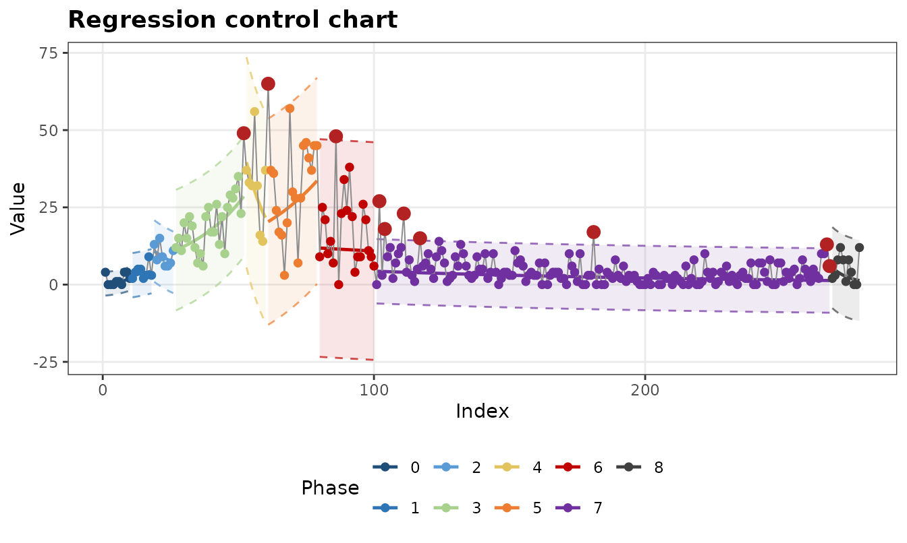

Case study: epidemiological monitoring (COVID-19, Recife)
Source:vignettes/covid-recife.Rmd
covid-recife.RmdThis case study reconstructs the use case that originally motivated the package: monitoring daily COVID-19 mortality in Recife, capital of Pernambuco state, Brazil, during 2020. The challenge is that epidemic curves are non-stationary by construction — they grow, peak, and recede. A classical Shewhart chart applied naively to the raw counts would either miss the early acceleration or fire constant false alarms during the descent.
The right tool is a regression-based control chart with automatic phase detection: fit a model to the trend, place limits around the fit, and let runs rules announce when the trend itself has changed.
The data
cvd_recife is a tibble shipped with the package. (Run
source("data-raw/build_all.R") once if the dataset is not
yet built locally.)
data(cvd_recife)
head(cvd_recife)
#> # A tibble: 6 × 3
#> date new_deaths .t
#> <date> <int> <int>
#> 1 2020-03-28 4 1
#> 2 2020-03-29 0 2
#> 3 2020-03-30 0 3
#> 4 2020-03-31 0 4
#> 5 2020-04-01 1 5
#> 6 2020-04-02 1 6Columns: date, new_deaths, .t
(an integer 1..N row index, useful when a model needs a numeric
predictor).
A first attempt: classical I-MR
fit_imr <- shewhart_i_mr(cvd_recife,
value = new_deaths,
index = date)
broom::glance(fit_imr)
#> # A tibble: 1 × 8
#> type n phase sigma_hat sigma_method n_violations n_rules pct_violations
#> <chr> <int> <chr> <dbl> <chr> <int> <int> <dbl>
#> 1 i_mr 279 phase_1 5.17 mr 139 2 0.498The chart fires repeatedly along the entire ascending limb of the first wave — every “violation” is the chart noticing that today is worse than yesterday, which is true and is also exactly what we already knew. The classical chart is the wrong tool: it reports violations of stationarity, not violations of the underlying public health story.
The right tool: regression chart with phase detection
fit <- shewhart_regression(
cvd_recife,
value = new_deaths,
index = .t,
model = "loglog",
phase_rule = "we_seven_same", # legacy WE rule used in the original analysis
rules = c("nelson_1_beyond_3s", "we_seven_same")
)
broom::glance(fit)
#> # A tibble: 1 × 8
#> type n phase sigma_hat sigma_method n_violations n_rules pct_violations
#> <chr> <int> <chr> <dbl> <chr> <int> <int> <dbl>
#> 1 regres… 279 phas… 3.47 mr 10 2 0.0358
length(fit$fits) # number of phases
#> [1] 9
autoplot(fit)
What the chart now does:
- The centre line follows the fitted trend, period by period.
- Limits move with the centre line.
- Violations are points that depart from the expected trajectory, not just from a constant baseline.
- Phase changes mark candidate inflection points: places where the trend itself has shifted (a new wave, a containment measure taking effect, a vaccination campaign starting).
Why log-log?
The model = "loglog" choice applies the transform
to the response before fitting a linear trend. This is more aggressive
than log — it stabilises variance for very right-skewed,
heavy-tailed counts. For COVID mortality counts, where day-to-day
variability scales sharply with the level, the log-log scale gave the
cleanest residuals in the original analysis. Run
shewhart_box_cox() on your own series to let the data
choose:
shewhart_box_cox(cvd_recife$new_deaths + 1)$lambda_hat
#> [1] 0If the maximiser is near 0, take logs. If it is near 0.5, the log-log scale is a reasonable approximation. For values between 0 and 1, a Box-Cox transformation in that range is the most defensible choice.
Methodological caveats
A regression chart applied to time-series counts pushes against several assumptions:
-
Independence. Daily mortality counts are
autocorrelated (the same person dying tomorrow versus today is rare;
serially correlated under-reporting and reporting delays are common).
Use
shewhart_diagnostics()to inspect the residual ACF; if the autocorrelation is strong, consider an ARIMA-based monitoring scheme instead (a topic for a future package release). - Right model. A piecewise-linear log-scale fit is a heuristic. More principled epidemic-monitoring approaches use SEIR-type models, the renewal equation, or compartmental Bayesian filters (Cori et al. 2013; Flaxman et al. 2020). The package’s regression chart is best understood as a signal-detection layer on top of whatever forecasting model one uses.
- Reporting heterogeneity. Counts of “deaths today” usually reflect reports received today, not deaths occurring today. Lagged corrections produce sawtooth patterns that look like violations but are administrative.
A note on the package’s history
The original v0.1 of Shewhart (now
shewhartr) was built specifically for this kind of
analysis, in collaboration with the epidemiology team monitoring
COVID-19 in Recife. The transformation choices, the 7-points-in-a-row
rule, and the start-base / phase-detection structure were all calibrated
for daily mortality counts. That heritage is preserved here as one
application among many, rather than as the package’s organising
principle. For everyday SPC, prefer the classical chart families and the
cleaner default rule (Nelson 2 — 9 points).
References
- Cori, A., Ferguson, N. M., Fraser, C., & Cauchemez, S. (2013). A New Framework and Software to Estimate Time-Varying Reproduction Numbers During Epidemics. American Journal of Epidemiology, 178(9), 1505-1512.
- Flaxman, S. et al. (2020). Estimating the Effects of Non-Pharmaceutical Interventions on COVID-19 in Europe. Nature, 584, 257-261.
- Box, G. E. P., Jenkins, G. M., & Reinsel, G. C. (2008). Time Series Analysis: Forecasting and Control (4th ed.). Wiley.
- Mandel, B. J. (1969). The Regression Control Chart. Journal of Quality Technology, 1(1), 1-9.